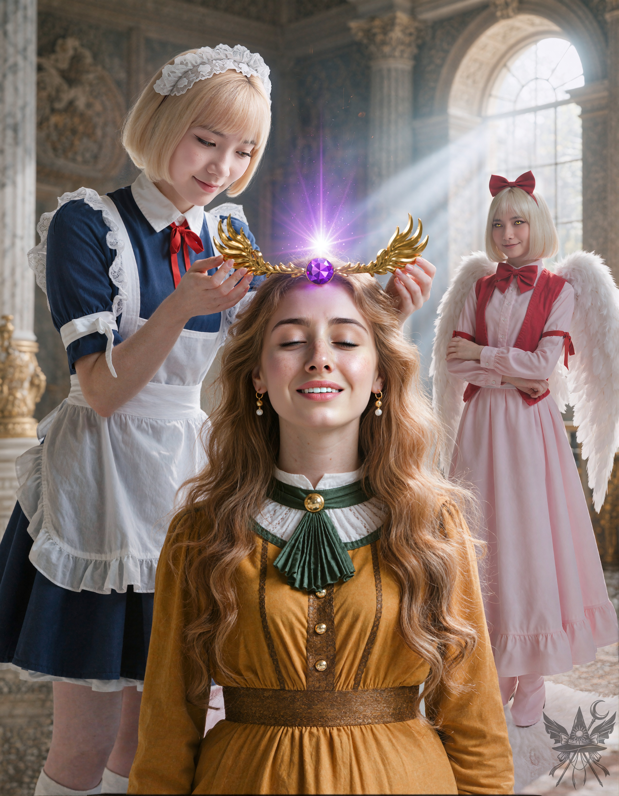
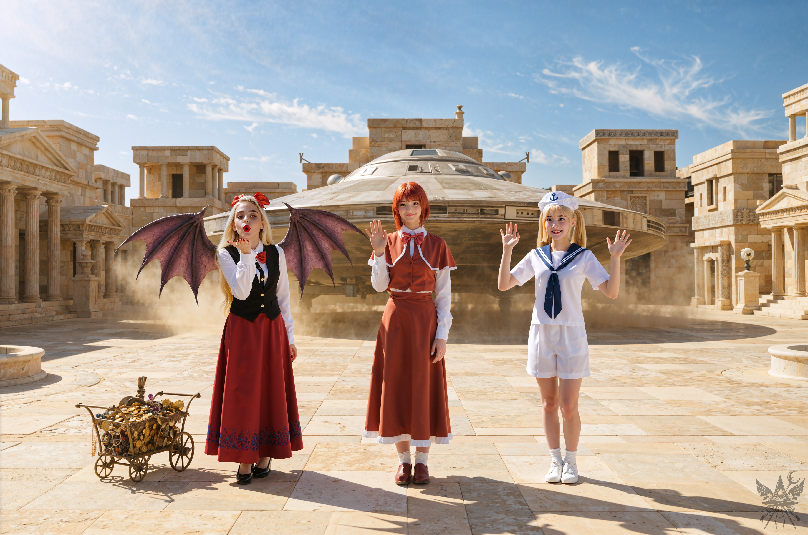
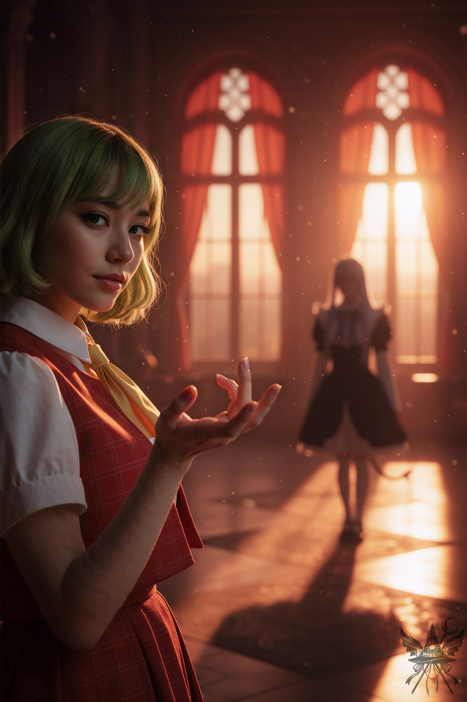
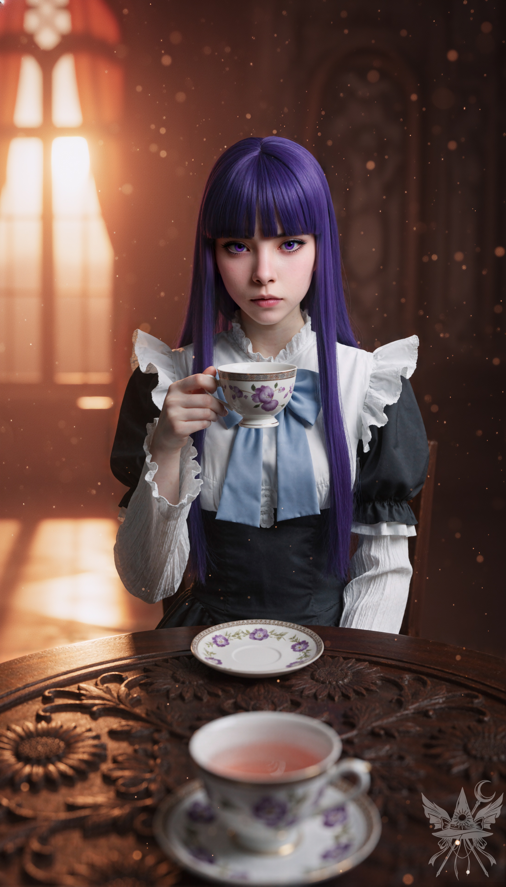

第66章 菊花、目覚めゆく。
過去へ旅立つ。過ぎ去った日々に再び身を置き、今は亡き者と語らい、全てを捨てて輝かしい日々に留まりたいと願う。これ以上の悦びがあろうか。だが、時は無情にも流れ行き、どの時代が真に幸福であったかなどと振り返りはせぬ。
若き側近であったわし、ユゲミアは、手紙を固く握りしめ、主君キクリ様の私室へと急いだ。
「我が女神様、民草どもが待ち焦がれておりまする。恐れながら、御支度を早めていただけませぬか？」
宮廷魔道士ギョクの恭しい声が響く。
「案ずるな、ギョク。すぐに民の前に姿を現すわ」
キクリ様は穏やかにそう答えられ、わしへと向き直った。
「キクリ様、至急お耳に入れたき儀がございまする。国家の大事にござります」
わしが神妙な面持ちで告げると、傍らにいたコンガラ陛下は怪訝そうに目を細めた。その疑り深い瞳には、隠しきれぬ嫉妬と不安がどろどろと渦巻いておる。
（この偏執狂め……。陛下を鎮められるのは、もはやキクリ様しかおられぬというのに）
「国家の大事……？ ユゲミア、そなたまでそのような顔をするとは、一体何事です？ さあ、話してごらんなさい」
「おい！ 我を抜きにして何の話だ！」
コンガラ陛下が鋭く口を挟む。
「あなた、案ずることはありませんわ。民の前に出て、『わたくしはすぐに参ります』と伝えてくださいな。その間、曲芸師たちに芸を披露させましょう」
キクリ様の優しくも毅然としたお言葉に、陛下は渋々といった様子でギョクと共にバルコニーへ向かわれた。
二人きりになった中央ホールで、わしは先ほどの手紙をキクリ様に差し出した。
「これをご覧なされ」
目を通されたキクリ様の顔が、パッと明るく華やぐ。
「なんと素晴らしい手紙でしょう！ 菊界のみならず、外の世界からも愛されているとは……感激ですわ！」
「……申し上げにくきことにございまするが……、この手紙は危険な罠やもしれませぬ」
「どういうことです？ 誰がわたくしに危害を加えようというのでしょう？」
わしはキクリ様の目を真っ直ぐに見据えた。
「そのようなこと……あり得ることにございます。以前、創造主へ贈り物を捧げ、その力を制限しようとする輩がおると耳にしたことがございまする。このような事態が……起こるやもしれませぬ」
（嘘をつかねばならぬとは……。このような手紙など、これまでの歴史で一度たりとも見たことがないというのに）
「直接お会いせねば信じられませんわ。ユゲミア、そなたはお祭り騒ぎに夢中になりすぎているようね。今日はお休みなさい」
「キクリ様、わしの懸念をご理解いただけませぬか？ この手紙は創造主の言葉を用い、かくも丁寧にしたためられておりまする。あの『使者ども』が何を企んでおるのか……疑わしきことにございます」
「……分かりました、ユゲミア。わたくしがそなたを相談役に任じたのは、わたくしが気づかぬことにも気づいてほしいからこそ。それで、どのようにすれば良いと提案するのです？ 使者たちを拒否すべきでしょうか？」
「恐れながら。わしが、キクリ様のご謁見をひそかに監視したく存じまする」
「……それでよいでしょう。わたくしは、そなたを信頼しておりますよ、ユゲミア」
使者たちに悟られぬよう、キクリ様はわしに軽い隠蔽の魔法をかけ、本棚の陰へと隠された。準備が整うと、部屋の中央で両手を天に掲げ、創造主の言語で高らかに宣言なされた。
「迎え入れます」
空間が歪み、ポータルが開く。そこから現れたのは、対照的な空気を纏う二人の少女であった。
「ようこそ、菊界へ。わたくしは、この菊界の創造主、キクリと申します。お二人をお迎えできて、まことに光栄に存じます」
「初めまして、キクリ様。お目にかかれて光栄ですわ。わざわざお出迎えいただき、感謝いたします」
自信に満ちた笑みを浮かべる少女が幻月と名乗り、その背後で静かな笑みを湛える少女が妹の夢月と名乗った。
「わたくしたち姉妹は、ささやかではございますが、自分たちの世界を創造した悪魔でございます。この度、菊界の美しさに感銘を受け、より優れた世界を築き上げるための技術を学ぶべく、はるばる参りましたの」
夢月の声は、絹のようになめらかで、しかしどこか底知れぬ冷たさを孕んでいた。
「なんと素晴らしい！ そんな志の高いお二人を、このまま立たせておくわけにはいきませんわ。さあ、どうぞこちらへ」
本棚の陰から息を殺して観察する。姉の幻月は好戦的な気配を隠そうともせぬが、真に警戒すべきは、常に完璧な淑女の仮面を被り、腹の底を見せぬ妹の夢月の方であった。
「キクリ様の御力には、ただただ感嘆するばかりですわ。これほど明るく美しい世界を、一体どのように創造なさったのか、お聞かせ願えますか？」
「愛の力ですわ。愛は全てを創造する力を持っております。お二人も、きっと同じように世界を創り出したのでしょう？」
キクリ様の純真なお言葉に、夢月は静かに頷く。
「ええ……。わたくしたちには、まだまだ学ぶべきことが多くあるようですわ」
「夢月、贈り物のこと、忘れないでよね」
幻月が口を挟み、これ見よがしに一つの王冠を取り出した。
「ええ、姉さま。キクリ様のおっしゃる通り、愛は偉大ですわね。この王冠は、私たち姉妹が心を込めて作り上げましたの。ささやかではございますが、私たち姉妹の敬意と友好の証として、この王冠を献上させていただきますわ」
「まあ、なんと美しいのでしょう！ すぐにでも着けてみたいものじゃわ！」
無邪気に目を輝かせるキクリ様に対し、夢月は静かに歩み寄る。
「この王冠は、神聖な力を集束させるための複雑な装置ですの。特別な方法で装着する必要がございますので、わたくしが着けさせていただきますわ」
「ええ、どうぞ」
（……ならぬ……！ お逃げくだされ、キクリ様！）
冷え切った大理石の空間に、差し込む光の筋が埃を照らし出している。その神聖な儀式めいた静寂の中、夢月がキクリ様の頭上に王冠を掲げ、ゆっくりと被せた。
王冠の中央に座す忌まわしき石は、初めはキクリ様の右耳の辺りに触れていた。そこから夢月は、器用な指先で王冠を反時計回りに回し、禍々しい紫の石を額の中央へと合わせた。
（そうか……！ 奴らは左へ、反時計回りに回して固定しおったのか！ ならば呪縛を解くにはその逆……右へ、時計回りに回せばよいのだな！）
仕掛けの真実に辿り着いたというのに、石から放たれる不吉な波動が、キクリ様の無防備な微笑みとあまりにも残酷な対比を描いていた。背後から目を光らせる幻月の、捕食者のごとき気配。すべてが欺瞞であると分かっているのに、声も出せず、指一本動かすこともできぬ。歴史という絶対的な壁の前に、わしの心はただ焦燥に焼き尽くされるしかなかった。

「……ひんやり……としますわね……！」
キクリ様は目を閉じ、かすかに肩を震わせた。
「少々お待ちくださいませ、キクリ様。宝石の魔力……、お感じになりますか？」
「……まだよく分かりませんが……、本当に素晴らしい王冠ですわ」
鏡の前に立ち、嬉しそうに回るキクリ様。
（ああ、キクリ様ときたら…… なんて無邪気な……！）
幻月は、新しい玩具を手に入れた子供を見るような目で微笑んだ。
「気に入っていただけて嬉しいわ。ところで、手紙は全部お読みになったかしら？」
「ええ、創造主の言葉遣いとしては完璧に近い出来栄えでしたわ。どこで習ったのかしら？」
夢月はわずかに視線を逸らし、答える。
「えぇと……、ある創造主様に教えていただきましたの。……ところで、『完璧に近い』とは、やはりどこか間違いがあったのでしょうか？」
キクリ様は手紙を広げ、穏やかに微笑まれた。
「それはそれは素晴らしい手紙じゃったが、強いて言えば小さな誤字が一つだけ。『万象お繰り合わせの上』の『バンショウ』は、森羅万象の『万象』ではなく、障害の『万障』じゃよ」
「……え？」
「我ら創造主を相手に『すべての事象をやり繰りして会ってくれ』とは、ずいぶんと大仰な冗談じゃと思ってな。ふふっ」
夢月は少しだけ顔を赤らめ、恥ずかしそうに言った。
「申し訳ありません。全く気づきませんでしたわ……」
「ご指摘、感謝いたしますわ。勉強になります……。ところで、キクリ様、その言語で何か書いていただけませんこと？」
「ええ、喜んで。何を書けば良いのかしら？」
「例えば……キクリ様のお名前など。本当に美しいお名前で……」
「あら、そんなに褒められると恥ずかしいわね……。どこに書けば良いの？ こんな素敵な手紙に書くのはもったいないでしょう」
幻月が白い紙を差し出す。
「この紙はいかがかしら？」
キクリ様が筆を取り、紙の中央に文字を書こうとすると、夢月がそれを制止した。
「左下に書いていただけますか？ より美しく見えるかと……」
キクリ様は戸惑いながらも、二人の頼みを聞き入れ、左下に「キクリ」と丁寧に書き込まれた。
目的を果たした二人は、深々と頭を下げる。
「キクリ様、本日は色々とお世話になりましたわ。そろそろ失礼いたします」
「あら、どうしてそんなに急ぐの？ お祭りだけでも見ていっておくれ。素晴らしい芸が見られますよ」
「申し訳ありませんが、急用がございましてよ……」
幻月が紙を素早くしまい込み、背後にポータルを開いた。
その瞬間、勢いよく扉が開かれた。
（……しまった！ 前回はわしがコンガラ陛下をお止めしたというのに……！ 今回は誰も止められぬ……！）
鬼の形相で部屋に飛び込んできた陛下は、キクリ様に駆け寄り、客人たちを怒りに燃える瞳で睨みつけた。
「キクリ！ 誰だ、こいつらは！？ なぜ、我に何も知らされぬのだ！」
「こ、コンガラ…… 落ち着いて……！」
陛下はキクリ様のお言葉を遮り、幻月の腕を乱暴に掴んだ。その一瞬の隙に、夢月はポータルへと逃げ込んでいた。
「お客様を怖がらせないでください！ コンガラ！ なんて乱暴をするの！」
「あんたに指図される筋合いはないわよ」
幻月も負けじと陛下の腕を振りほどき、背後のポータルを閉じた。
「一体何をするのです！ 大切な客人に対して、無礼ですわよ！」
（……くそっ！ わしが、もっと勇敢であったなら……。あの紙を奪い、調べられたものを……！）
言い争い始めた二人を前に、わしはただ見送ることしかできぬ。キクリ様に駆け寄り、あの忌まわしき王冠を外してさしあげたい。だが、体が石のように重く、一歩たりとも動けなかった。
「ユゲミア！ ユゲミア！」
頭の中で響く声が、徐々に鮮明になる。
目を開けると、埃っぽい石畳の上に倒れ込んでいた。すぐ隣には、左腕を失い血まみれになった魔女が倒れておる。異界の乗り物の船長がわしの額に手を当てており、少し離れた場所では、悪魔の少女が陛下を相手に必死に戦っていた。
だが、わしの意識は、もはや現実の阿鼻叫喚など捉えてはおらぬ。
かつてないほどの力が、全身の血を沸き立たせるように駆け巡った。
わしは勢いよく跳ね起きると、壁に埋め込まれ銅と化したキクリ様のもとへ駆け寄り、迷うことなく王冠を鷲掴みにした。
「キクリ様……！ 申し訳ありませぬ……！ 全て……わしの不徳の致すところにございまする……！」
「キクリに触れるな、化け物め！」
陛下は怒りに燃える瞳でわしを睨みつけ、
「貴様！ 何を……！」と獣のように咆哮した。だが、わしは怯むことなく、ありったけの力を込めて王冠を時計回りに回した。
軋むような音が響き、王冠が外れる。
＊＊＊

菊花、目覚めゆく。
時は融けゆく蝋のごとく、
古き宮殿の残骸に、奇妙な形を成して降り積もる。
戦火は凍てつき、
消え入りて、
取るに足らぬ塵と化す。
菊花、ついに目覚め、
愛を放ちながら青銅の枷を解き放ち、
歩みを進める。
憂いの騎士は彼女の足元に跪き、「許しを」と乞う声は受け入れられる。
今宵、すべてが赦される。
歩みを進め、菊花は傷付いた黒髪の魔女に寄り添う。
母なる口づけをその身に受け、
魔女は元の姿へと戻る。
さらなる一歩、
傲慢な緑髪の女が行く手を阻む。
菊花はその肩に手を置き、
女は静かに受け入れる。
菊花はまた一歩踏み出す。
灰はゆっくりと天に昇り、
幾星霜の埃を払い、
美しい星空を現す。
夜は菊界を包み込み、
一夜のうちに菊花はすべてを赦し、
かつての美しき宮殿は
再び輝きを取り戻す。
眠れる古都は目覚め、
時の流れは本来の姿を取り戻す。
夜明けが訪れ、
清らかな空気と共に
蘇りし菊界に、新たな息吹が吹き込まれる。
＊＊＊

昨夜の息詰まるような死闘は、まるで心地よい幻のようだった。
切り落とされたはずの左腕は元通りに繋がり、頭の中にこびりついていた不快な靄も綺麗に晴れ渡っている。柔らかいベッドで目を覚まし、案内された広場は、強い日差しが白い石造りの柱やアーチにシャープな影を落とし、熱狂的な歓声と熱気に包まれていた。集まった群衆の頭には、一様に角が生えている。
この調和のとれたベージュと白の世界において、埃で白く汚れたコンバットブーツを履き、異邦の服を纏うメデアたちの姿は、どうしようもなく浮いていた。だが、その泥汚れこそが、メデアたちがこの世界で為したことの確かな証拠でもあった。
広場に設けられた白大理石の玉座には、見慣れた和装から古代の軍団長のような筋肉鎧へと着替えたコンガラが、威厳を湛えつつも憑き物が落ちたような穏やかな顔で座していた。やはり、オレンジの姿はどこにもない。
歩み寄ってきたキクリが、慈愛に満ちた表情でメデアの頭に菊の花冠を載せた。
「岡崎夢美殿」
キクリは静かに語りかけた。
「そなたのおかげで、今日という日を迎えることができました。そなたの知性と優しさは、わたくしにとって大きな支えとなりましたわ。心より感謝いたします。そして、科学界がそなたを受け入れるよう、わたくし自ら尽力いたしましょう」
キクリは夢美の唇に口づけをすると、今度はちゆりに近づいた。
「北白河ちゆり殿。そなたの忠誠心、創意工夫、そして勇気がなければ、菊界の再興は叶わなかったでしょう。わたくしは、そなたのどんな願いも叶えます。さあ、遠慮なくお申し付けくださいな」
ちゆりの唇にも口づけをすると、エリスのそばへ歩み寄る。
「エリス殿。そなたの粘り強さ、勇敢さ、そして機転は、菊界の歴史に永遠に刻まれるでしょう。報酬のことは心配なさるな。わたくしの世界の富は、全てそなたのものと考えていただいて構いませんわ」
厳かに口づけをしようとしたキクリに対し、エリスはそれを遮り、情熱的なフレンチキスを返した。
「最後に……選ばれし者よ、メデア殿。そなたは誰よりも多くの努力を重ね、菊界のために精神と腕を犠牲にしました。ゆえに……そなたは望むものすべてを手に入れることができるでしょう」
深い尊敬と感謝を込めた口づけが落とされる。
「さあ、祭りを始めましょう！」
ハープとフルートの美しい調べが響く中、メデアたちは宮殿の食堂へ案内された。長いテーブルには豪華な朝食が並べられている。席に着くなり、顔を見合わせて安堵の笑みがこぼれた。嵐が過ぎ去った後のような、穏やかな空気がそこにはあった。
「メデア、あなたと出会えて本当によかったわ」
夢美は紅茶を一口飲み、静かに言った。
「あなたが教えてくれたこと、一緒に経験した出来事……きっと、私たちの研究を大きく前進させるわ。私たちの星では、技術革命が起こるかもしれないわね」
「こちらこそ。お二人がいなかったら、私はどうなっていたか……。ところで、オレンジはどうなったんですか？」
夢美とちゆりは顔を見合わせ、表情を曇らせた。
「オレンジは……もういないわ。どうすることもできなかったのよ。跡形もなく消えてしまったみたい」
オレンジの無鉄砲な笑顔を思い出しながら、スープを一口飲む。その時、ちゆりが唐突に口を開いた。
「ねぇ、夢美様。エリスは、一緒に私たちの星へ行くんだよね？」
エリスはステーキをナイフとフォークで器用に切り分けながら、悪びれずに答えた。
「そうよ〜。もちろん、決まってるじゃない！」
ちゆりは真剣な表情でメデアを見つめ、はっきりと言った。
「……それなら……私はここに残る」
重苦しい沈黙が食堂を包み込む。夢美は驚きのあまり、思わず声を荒らげた。
「どういうこと？ ここに残るって……？ どうやって暮らすつもりなの？ 一体、何をするっていうのよ？」
「私はメデアみたいに魔法使いになりたいんだ！ 夢美様は私のご主人様じゃないでしょ？」
「落ち着きなさい、ちゆり」
夢美は剣幕にたじろぎながらも、冷静さを保とうと努めた。
「確かに、ちゆりは自分の運命を自分で決める権利があるわ。でも……メデアがそれを受け入れるかどうか……。ねぇ、メデア」
（……いきなり私に振られても困るのだけれど。ちゆりに魔法を教えろということかしら？）
「えっと……私にどうしろと？ ちゆりに魔法を教えるってことですか？」
夢美は困ったように苦笑した。
「ううん、そんなに単純な話じゃないのよ。ちゆりは自分自身に責任を持てるタイプじゃないの。そうでしょ？ 私の可愛い助手ちゃん」
ちゆりが少し恥ずかしそうに目を伏せるのを見て、夢美は言葉を継いだ。
「メデアがちゆりを引き取ると言うことは、ただの先生になるだけじゃないの。私が今やっているように、事実上、この子の保護者になるってことよ。もし、ちゆりに何かあったら、それはあなたの責任になるわ。いい？」
（……少々荷が重いけれど、ここまで来て放り出すわけにもいかないわね）
「分かりました。ちゆり、これから一緒に頑張りましょうね」
夢美は安堵の笑みを浮かべ、紅茶をもう一口飲んだ。
「実はね、私たちはまず幻想郷へ行くつもりなの。久しぶりに理香子に会いたいし。メデアも幻想郷へ戻るんでしょう？ そこで、ちゆりと再会すればいいわ」
＊＊＊
朝食の後、メデアたちはバルコニーに招待された。ユゲミアも合流し、キクリが夢美たちと話している間、メデアはユゲミアから事の顛末を詳しく聞いた。
（やはり、黒幕は幻月だったのね。あの姉妹は、これで終わるつもりじゃなさそうだわ）
考え込んでいると、キクリが歩み寄り、静かに声をかけてきた。
「メデア殿、どのような褒美を望むのでしょうか？ お金には興味がないと聞いておりますが……。知識でも求めておいでですか？」
「知識も欲しいですが……、正直に申しますと、何か役に立つアイテムも頂戴できればと」
「うむ。それなら、魔法使いにぴったりの、丈夫で軽い服を仕立ててさしあげましょう。ですが、物に頼りすぎるのは良くありませんよ。人生は予測不可能なものです。一番役に立つのは、そなた自身の力です。ちゆり殿が言うには、そなたはチャクラの魔法に詳しいそうですね。……ですが、はっきり言っておきます。それは大きな間違いです。わたくしはそなたの能力を伸ばすことはできますが、全てのチャクラを一瞬で開くことはできません。そなたの体は、まだそれを受け入れる準備ができておらぬゆえ。さあ、どのチャクラを開くのです？」
「キクリ様、ちょっと待って！ メデアもスキャンさせてよ！」
ちゆりは夢美の宇宙船で使っていたチャクラ計を取り出し、メデアにかざした。結果がホログラム画像で宙に浮かび上がる。
「メデア、見て！ キクリ様は私のアージュニャーチャクラを完全に開発してくれたんだ！」
| 色 | メデア | ちゆり |
| --- | --- | --- |
| 赤 | 0% | 10% |
| オレンジ | 10% | 10% |
| 黄色 | 10% | 10% |
| 緑 | 5% | 10% |
| 水色 | 80% | 10% |
| 藍色 | 20% | 100% |
| 白 | 10% | 0% |
＊＊＊
夢美が歩み寄り、軽く頭を下げた。
「そろそろ時間みたいね、メデア」
「ちょっと待ってください。幻想郷まで送ってほしいんですけど……」
キクリが穏やかに微笑んで説明した。
「いいえ。もう風見幽香とは話はつけてありますのよ。メデア殿専用のポータルを用意しておりますゆえ、安心なさい。幽香が待っているようですわ」

頭上には澄み渡るような青空が広がり、強い日差しが遺跡の白を眩しく照らし出している。吹き抜ける風が心地よい。
背後では、出発準備を整えた巨大な銀色の宇宙船が、エンジンの駆動音と共に土煙を巻き上げていた。
「それじゃあ、お別れね」
振り返ると、エリスがちゃっかりと金貨や宝飾品を山盛りに積んだ手押し車を足元に引き寄せ、機嫌よく投げキッスを送ってきている。相変わらずの強欲さだが、このたくましさにはもはや笑うしかない。
「そうね〜。メデっちに出会えてよかったわ。あんたって面白いやつね！ ちょっと怖いけど、うふふ」
「怖いって、どういうことよ？」
「えーっと……、なんていうか……。邪悪なオーラが、すごすぎて……。うん、怖い怖い！」
「それはどうも。そう言われると、私もエリスのこと、ますます好きになっちゃうわ」
軽く抱きしめ合うと、メデアはちゆりに顔を向けた。
「じゃあ、ちゆり、また幻想郷でね」
「うん……。魔法のレッスン、楽しみにしてるんだ！」
四人で宮殿の屋上へと向かった。宇宙船に乗り込もうとした夢美が、突然立ち止まる。
「あっ、忘れてた！ メデア、プレゼントしようと思ってたのよ。全部は無理だから、どれか一つ選んでね」
差し出された未来的な機械の中から、メデアはブラスターを選び取った。
（やっぱり、魔法だけじゃ不安だし……。これも必要になるかもしれないわね）
宇宙船が視界から消え去る頃には、太陽は中天に達していた。
昼食の席には朝と同じく豪奢な料理が並べられていたが、胃が重く、ナイフを取る気にはなれなかった。緊急時には烈火の如き厳しさを見せるユゲミアだが、平時の物腰は柔らかく、二人きりでの静かな食事の時間は思いのほか居心地が良かった。
食後、衣装部屋で真新しい衣服を受け取った。一見するとただの布だが、指先に触れるわずかな反発力が、それが物理や魔法の衝撃を逸らす特別な織物であることを物語っていた。リュックサックに荷物を詰め直し、旅の準備を整える。
キクリとコンガラに見送られ、宮殿を後にした。
陽の光を浴びながら古代都市の街並みを抜け、郊外の小道へと至る。
夕暮れに近い、黄金色の光が辺りを優しく包み込んでいた。逆光の中で空気中の微細な塵が煌めく中、道中ずっと無言だったコンガラが、ようやく重い口を開いた。
動くたびに金属の擦れる重厚な音が響く。その出立ちはもはや戦のためではなく、王としての威厳に満ちていたが、表情はどうにも不服そうに口をへの字に曲げたままである。背後からキクリが両手を添え、優しく、しかし有無を言わさぬ圧力でその上体を前へと傾かせ、半ば強制的に謝罪の姿勢をとらせていた。
「メデア殿……、許してくれ。そなたは最初から……、我の味方だったのだ……。我は、愚かだった……」
（『だった』か……。この殊勝な態度が、今だけじゃないといいのだけれど）
「過去は水に流しましょう、コンガラ様。ところで、シンとギョクはどうなったのですか？」
コンガラの顔が曇った。
「……二人には呪いをかけた……。あの時の抱擁が…… うっとうしくてな……！」
背後のキクリが、「もう……」と小さくため息をつく。
「メデア殿、いつかシンとギョクに会うことがあれば…… 菊界が復興したと伝えてほしいのです……。頼みますわ」
「かしこまりました。コンガラ様、明羅と小兎姫はどこへ行ったのですか？」
「婦警は軍の大部分を引き連れ、明羅殿を従えて幻想郷へ向かった。管轄を拡大すると申しておったのだ」
「そうでしたか……。窓付きは？」
「誰のことだ？」
訝しげな声が返る。
「……牢獄に入れた…… 小さな女の子です」
「……ああ、あの子供のことなら…… 何も知らぬ。いなくなった。ただそれだけだ」
気まずそうに言葉を濁す。
剣が虚空を切り裂き、空間の亀裂——ポータルが現れた。
キクリが穏やかな笑顔で別れを告げる。
「メデア殿、そなたを待つ者がいます。ですが、菊界の扉はいつでもそなたのために開かれていますわ。良い旅を。そして……もう一度……ありがとう」
深々と頭を下げ、ポータルの奥へと足を踏み入れた。
星すら見えない冷たい暗闇を抜けると、肺を満たしたのは、底冷えするような石の気配と古びた木の匂いだった。数日前、召喚の儀式を行ったあの部屋だ。張り詰めた空気が、これから待ち受ける対話を予感させる。
歩みを進めると、門番のエリーと目が合った。いつものように大鎌を携え、赤いリンゴをかじりながら、微かに口角を上げる。
そこを通り過ぎ、広間へと出た。

西日を受けて黄金色に輝く空間。光の筋が斜めに差し込み、チンダル現象によって無数の埃が可視化され、時間が静止したような錯覚に陥る。
逆光の中に立つ幽香が、胸の高さで静かに右手の掌を上に向けていた。その背後には、闇に溶け込むようにフレデリカが静立している。
「あら、おかえりなさい、メデア。……それとも、メデア“様”かしら？ どちらがお好み？」
相変わらずの、気怠げで皮肉たっぷりの声。
「メデアで結構です」
冷たく言い放つ。
「私の頼みを聞く代わりに、好き勝手にあちこちへ行って魔界をかき回し、挙句の果てに菊界を復興させてしまったわね。何を言ったか、覚えていないのかしら？ 破壊工作とスパイ活動“だけ”よ。一度じゃ理解できなかった？」
返す言葉もない。弁解する気力すら湧かなかった。
「だから言ったでしょう？ あなたは若い頃の私にそっくりだって。ああ、懐かしいわ！ ねぇ、梨花ちゃん？」
視線を向けられたフレデリカは、感情を表に出すことなく、見覚えのあるカップで静かに梅茶を啜っていた。
「とにかく、事態は収拾してくれたわ。コンガラとその手下は、もう二度とこの館に近づいてこないでしょう。だから……任務完了よ。……もちろん、私からの報酬は期待しないでちょうだいね」
「最初から承知しています」
フレデリカが静かに口を開く。
「やれやれ、幽香、そんなに厳しくしないで。まさか、メデアを追い出すつもり？」
「私はそんなに冷酷じゃないわ。好きなだけここにいればいい。それが報酬よ。文句はないわよね？」
答える代わりに、ずっと気になっていたことを口にした。
「オレンジは？ ……死んだんですか？」
「あの赤毛の子？ あの子ったら、しょっちゅう死んでいるのよ。ああいう頭の空っぽな妖怪は、危険センサーが壊れているんじゃないかってくらい、無茶をするんだから。きっとすぐに自分の山で目を覚まして、またどこかで騒ぎを起こすわ」
その言葉にわずかな安堵を覚えた直後、フレデリカが静かで、しかし逆らえない響きを持った声で告げた。
「幽香、二人きりにして」
「分かったわ。二人で好きに“にゃんにゃん”でもすれば？」
足音と共に、幽香の気配が広間から遠ざかっていった。

重厚な木製テーブルを挟んで、向かい合う。
西日が部屋の奥深くまで差し込み、空気中の埃が金色の粒子となってゆっくりと舞っている。古びた屋敷特有の乾いた木の匂いと、紅茶の微かな湯気の香りが混ざり合う。
ティーカップを口元で止めたフレデリカは、瞬きすら忘れたかのような静止した姿勢で、透き通るアメジスト色の瞳をこちらへ向けていた。部屋を満たす暖かな光とは対照的な、底知れぬほど冷ややかな視線。
「おかえりなさい、メデア」
「私のマグカップ、ちゃんと残っているかしら？」
「もちろんよ。あなたのものは全部、ちゃんと取っておいてあるわ」
差し出された梅茶を一口飲み、喉を潤す。
「冗談です。それで、フレデリカさん、頼みは果たせましたか？」
「ええ、期待以上だったわ。あなた、想像もつかないような経験をしたんでしょう？ それが問題なのよ」
「問題……？」
「そう、報酬のこと。メデアに何をあげたらいいのか、さっぱり分からないの。もう立派な魔法使いになったんだもの。チャクラも使いこなせるようになったみたいだし」
「ええ、今では私の主な攻撃手段になっていますね」
「でも、それだけじゃないって分かっているでしょう？ チャクラには他にも色々使い道があるのよ。例えば……神聖な能力ってやつね」
「ええ、その能力について、本で読みました」
「もう読んだの？ それに、いくつかのチャクラは完全に開発したんでしょう？ だったら、その能力を一つ……1日に1回だけ使える能力を……授けましょうか。どれが欲しい？」
[SYSTEM ALERT: 音響兵器デプロイ完了]
▼ 本章の絶望を1000%味わうための専用聴覚データ ▼
■ YouTube：『Golden Spring (黄金の春の序曲)』